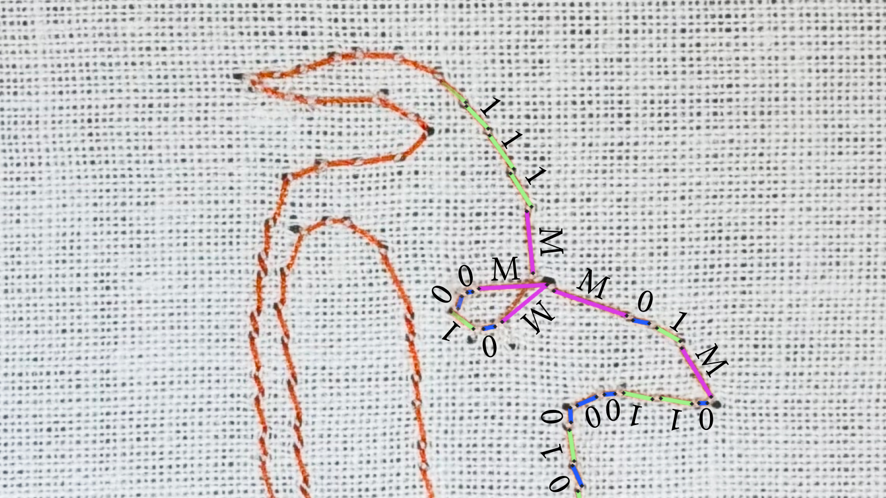
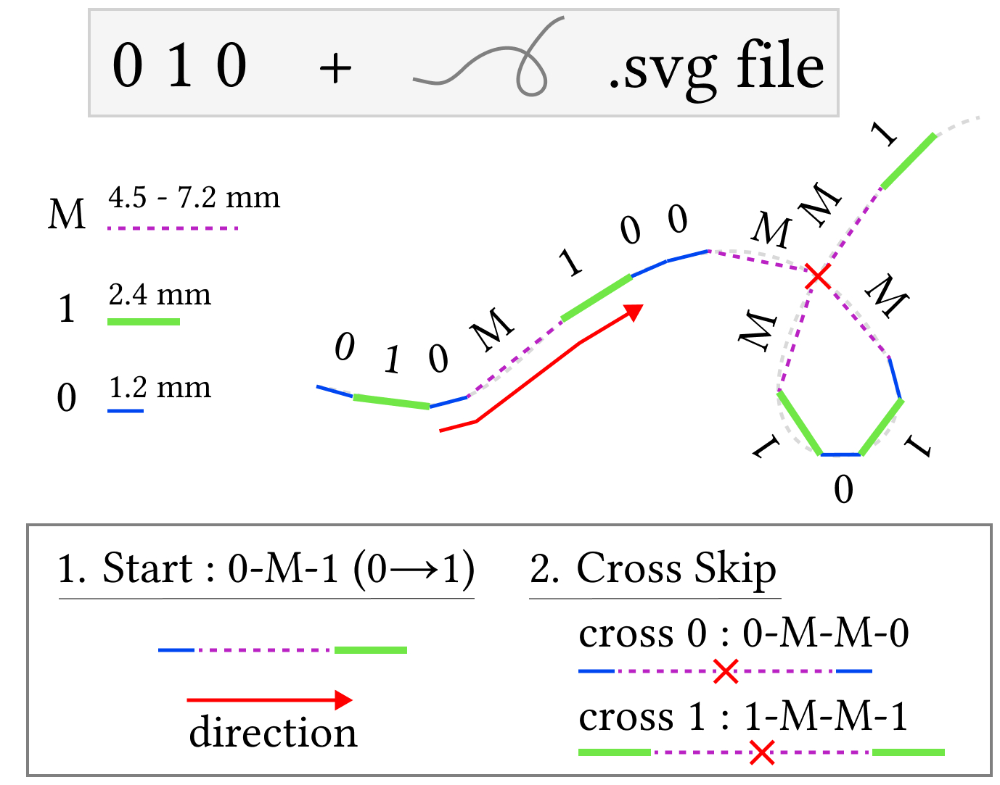

Research Project · Embroidery
Stitch Barcode
A method that resamples a single-line vector path with different stitch lengths, embedding binary data and path information directly into an embroidered line.

Physical Representation

Each line segment is encoded by its physical stitch length. The diagram on the left shows the three symbol lengths and the marker patterns used to control reading order.
| Symbol | Stitch length | Role |
|---|---|---|
| 0 | 1.2 mm | Short data stitch |
| 1 | 2.4 mm | Long data stitch |
| M | 4.5–7.2 mm | Marker stitch |
Start Marker
The 0-M-1 pattern identifies the start and sets the decoding direction from 0 toward 1.
Skip Markers
- Cross skip:
0-M-M-0or1-M-M-1preserves the same bit state across a crossing. - Corner skip: A marker is inserted at corners below 30° to prevent a nearest-endpoint jump to the wrong stitch.
Encoding
- Convert the source information into a 12-bit binary payload.
- Append one parity bit so the number of 0s in the 13-bit block is even.
- Insert a
0-M-1start marker and cross-skip or corner-skip patterns where the path geometry could make its order ambiguous. - Resample the single-line vector path using the stitch length assigned to each symbol.
- Fabricate the encoded path with a Singer Quantum Futura CE-200 embroidery machine.
Decoding Workflow
The implementation compresses image segmentation, path reconstruction, and error-aware packet decoding into one pipeline.
Select the orange stitches
Eight HSV candidates are tested from loose to strict. Each mask is split into 8-connected components, while very small regions are discarded.
Convert pixels into 0, 1, and M
PCA reduces each component to one line and measures its length in pixels. One-dimensional K-means separates short 0 and long 1 stitches; lengths above 1.45 × the learned 1 center become M. The HSV choice is scored by path coverage plus fragmentation and merging penalties—not by whether the final data decodes correctly.
Recover the physical reading order
Both endpoints of every stitch are indexed in a KD-tree. A 0-M-1 start marker fixes the start and the 0 → M → 1 direction; from the 1 exit, traversal repeatedly chooses the nearest unused endpoint within 3 × the mean 0 length.
Remove geometry-control symbols
The ordered physical sequence is reconstructed, then 0-M-M-0 and 1-M-M-1 cross/corner patterns are removed so they are not mistaken for payload data.
Validate packets and recover the number
Each 0-M-1 begins a packet of 12 data bits plus one parity bit. Only packets that pass the even-zero parity check enter a bitwise majority vote; the resulting binary value is converted to decimal.